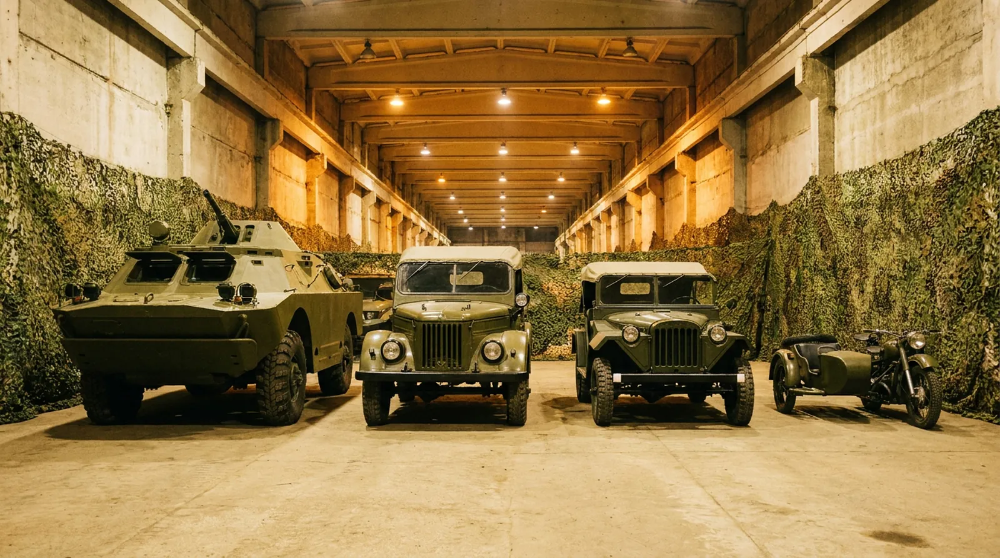
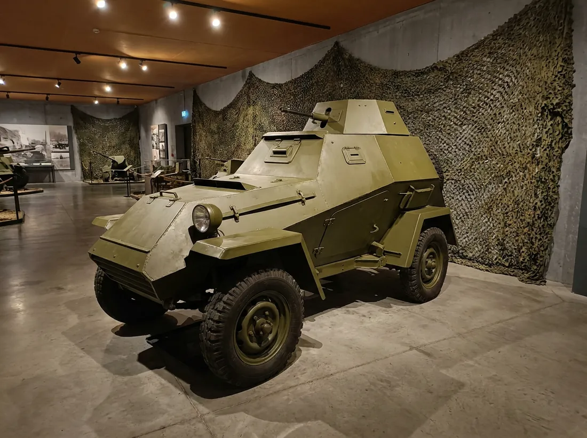
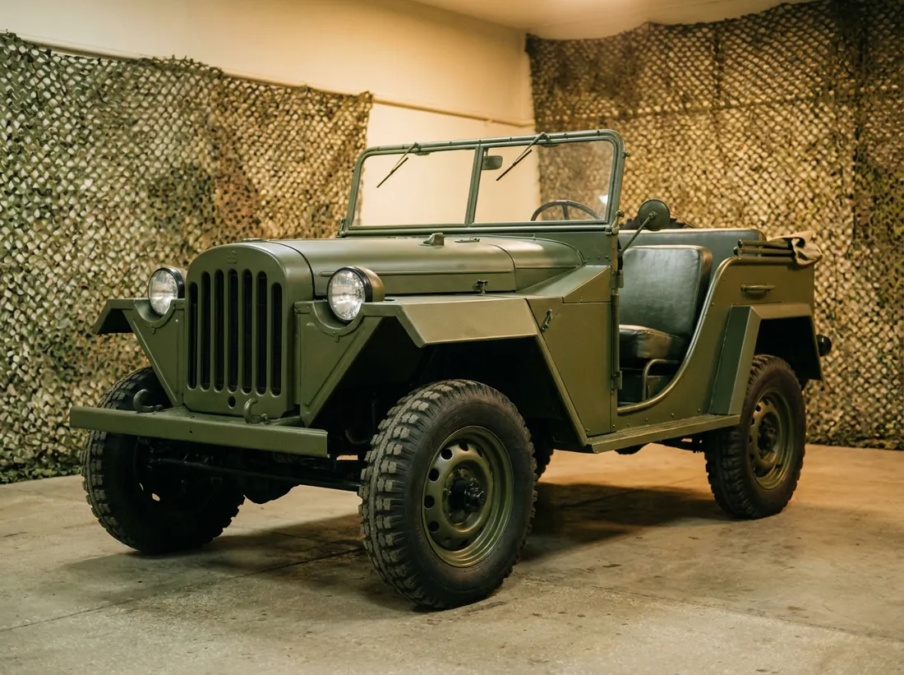
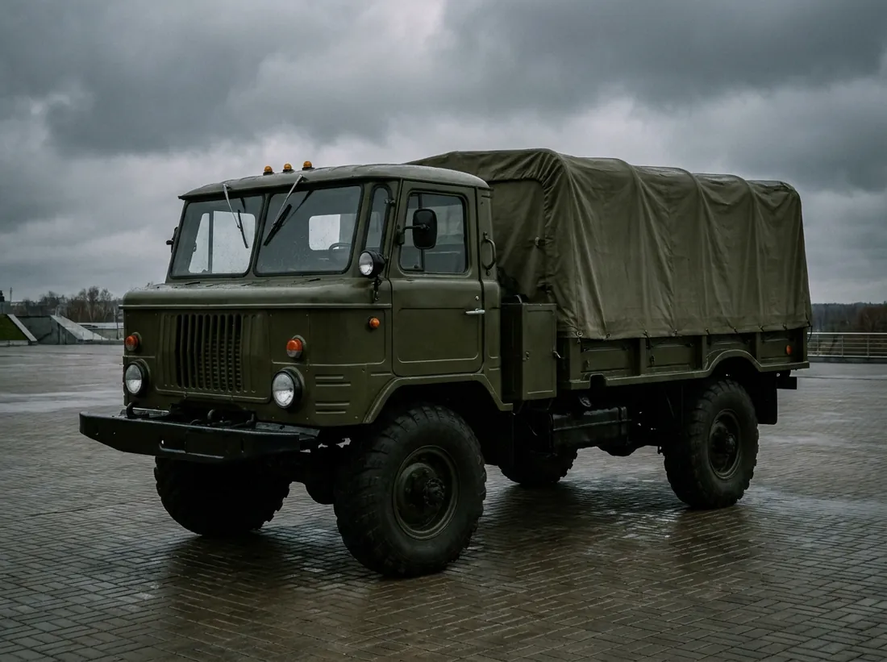
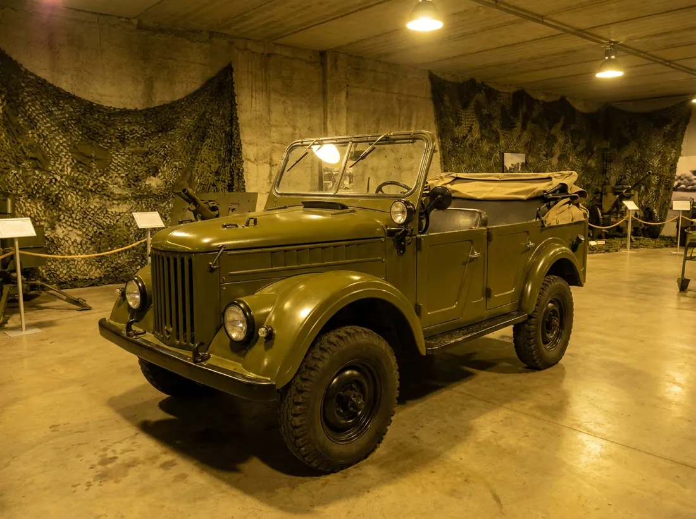
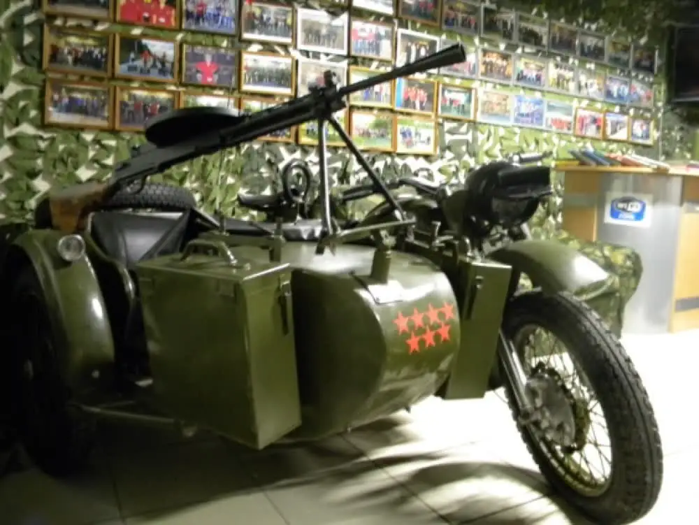
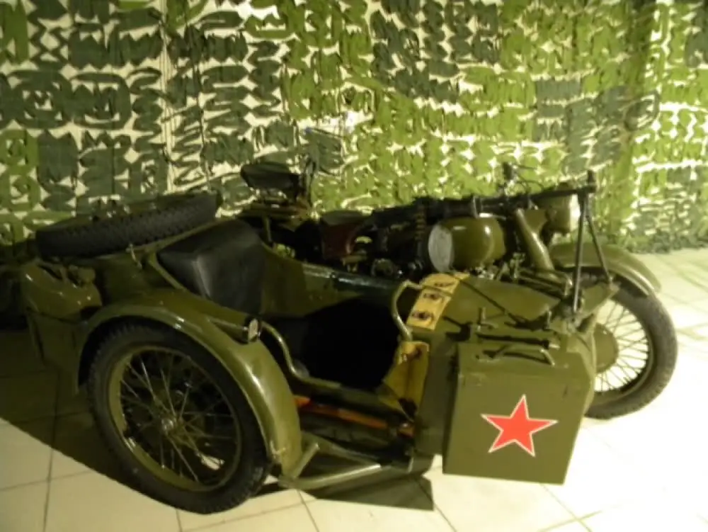
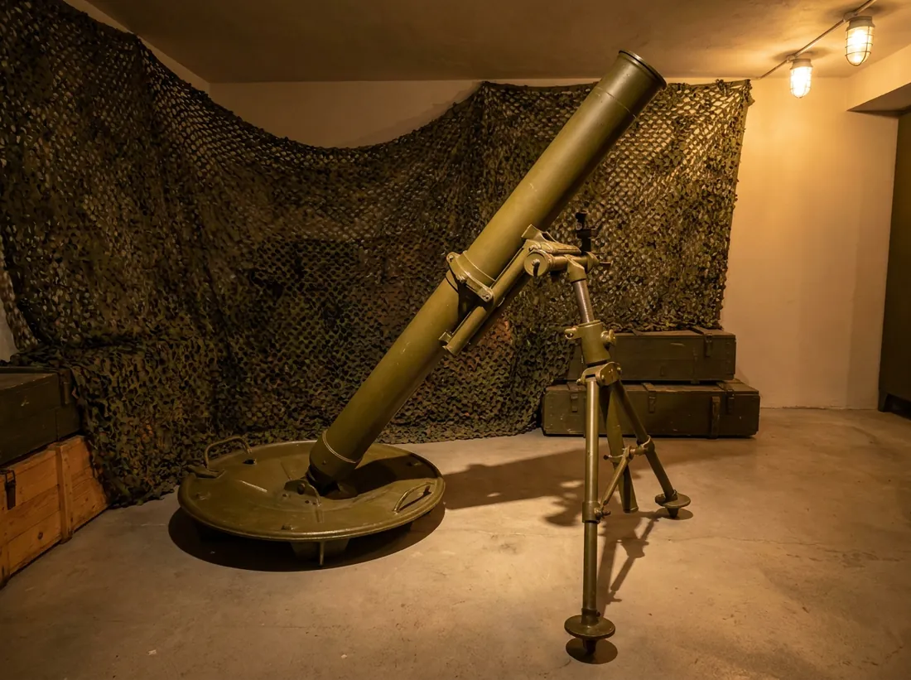

Одиннадцать единиц: от бронеавтомобиля БА-64 образца 1943 года до БРДМ-2. Техника участвует в парадах, выставках и экскурсиях – и заводится.

Редчайшие экземпляры форменного обмундирования времён Гражданской и Великой Отечественной войн и наших дней. В галерее тира – более 40 массогабаритных образцов оружия: от Гражданской войны до вооружения современной Российской армии.

Советский лёгкий бронеавтомобиль периода Второй мировой войны.

Наравне с «полуторкой» прошёл всю Великую Отечественную.

«Всепогодный проходимец»: рабочая машина военных, геологов, нефтяников и целинников.

Наследник командирских джипов войны. В мирной жизни получил имя «Труженик».
Лёгкий внедорожник ЛуАЗ-967. Известен по армейскому обозначению ТПК – транспортёр переднего края.

Советский тяжёлый мотоцикл. Выпускался крупной серией с 1941 по 1960 год.

Модернизированная М-72: с 1956 года завод перешёл на эту модель.

Советский миномёт калибра 120 мм образца 1938 года. Гладкоствольная жёсткая система по схеме мнимого треугольника.
Та самая «сорокапятка», индекс ГАУ 52-П-243-ПП-1. Советское полуавтоматическое орудие калибра 45 мм.
Экскурсии для школ и организаций – бесплатно. Техника на ходу.